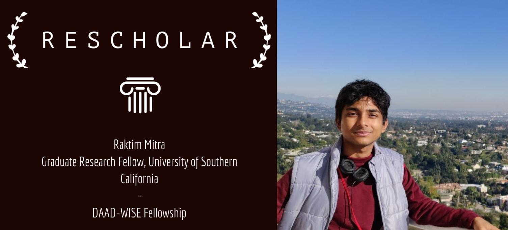
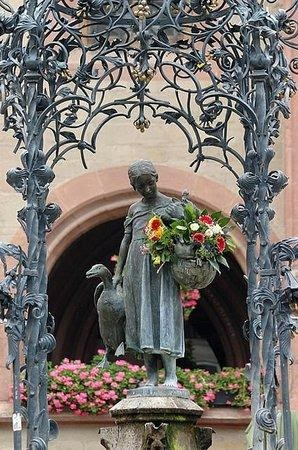
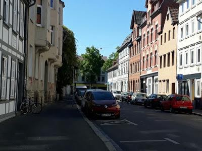
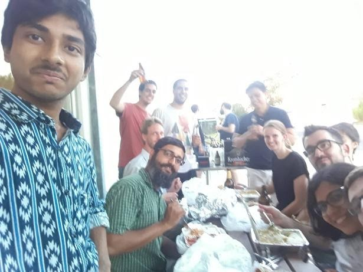

Rescholar - Raktim Mitra
October 27, 2020
As November inches closer, the tension of procuring a research internship is mounting. Especially for people who want to procure the prestigious DAAD fellowship for research internships in Germany. Unlike some other internship programs, DAAD-WISE is not
an internship program i.e. one has to already have got an internship offer in Germany before applying to DAAD for fellowship (which will easily cover the costs and leave room for saving.) This is what makes it really hard
in general.

So, let’s talk about the elephant in the room first. How does one get an internship at the first place? (although this year, that window is nearly over already!) The answer is really not straight forward and consists of a balance between several factors:
- Emailing skills: The stories of spam emails by Indian students asking for internships to international professors are well known. However, that should not dissuade you from trying. The key point in succeeding
is to be reasonable in your emails and sending them only to people whose work matches your interest (in a strong way, not “oh I heard that topic is interesting” way). The content of email should avoidably never
contain generic statements which applies to anyone i.e. not specific to you and the recipient (e.g. ‘I am deeply interested in machine learning’, or, starting with “Respected Sir/Ma’am”. instead of using their
name “Respected prof. X”). Also, probably contacting professors with whom a senior of yours worked previously might be a good idea (provided he did impress him)! There are many other dimensions to this which
I have covered in a longer article regarding this topic on a personal blog which you can find
here.
- Field of interest: Although this is not always a choice, due to influence from our environment, one should be aware that some fields offer more opportunities than others. This is especially true for interdisciplinary
fields and more so for Germany. For fields that combine subjects that normally in Indian academic scenario are rarely of common interest to people (e.g. computer science and biology in my case). However there
is a demand of such skilled researchers/professionals worldwide. I am sure there are other such combinations of fields too. So, if you are an undergraduate student unsure of where your interests lie and frustrated
with people talking about “Competitive Coding”, “Machine learning”, “Signal Processing” etc. everywhere, I encourage you to look beyond the herd and explore other (and potentially more impactful) options. Take
a risk and you might just enjoy it. From my own experience I think this COVID-19 pandemic has simultaneously increased the demand and importance of academic research and industry level work in Bioinformatics,
Biomedical engineering, Virology etc. These fields combine almost all aspects of fundamental sciences (and also ML/AI/CS etc. for you) I am sure, some of my friends and juniors can remember me telling them something
like this was coming

- Cracking an Interview: After extensive efforts, you may manage to get attention of a professor. After some email exchanges you can almost always expect to be invited for a “video chat”. In my opinion you
should treat this as more of a chat and less of an interview (unlike SPO interviews, where you are competing with many for a spot). These sessions will mostly judge you more on how you think and your personality
rather than on what you actually know (that becomes clear pretty early from your emails). So, keep calm, have a good conversation with the person you want to work with. The rest shall be ok. For a more detailed
description, you can have a look at my blog, which I have shared earlier.
- Look out for opportunities: Sometimes, all efforts might fail and you may find yourself in a really dark place where you find all your wingies/friends celebrating there SPO or research internship offers.
In times like these, please do not lose hope and look out for opportunities and waste no time to grab them when you see them. My story was quite like this.
- CPI: It matters. Period. The closer to or higher than 9, the better. (First and second years, take note!) That being said, I am vehemently against shunning all forms of campus activity just to focus on your
CPI. Both can be and should be done. The key is “Discipline”. But no more on that for this article
So, now it’s time to tell you my story:
I am Y15-CSE. Most of my first year went towards learning key things a CSE student needs (coding, learning linux, git). I spent a semester with the AUV team which helped. (that was when AUV was just starting).
Then my ACA project and summer 2016 (under Prof. TV Prabhakar) was mostly about Android development. The key insight I gained from the summer and ACA experience is that I did not want to do software development. Meanwhile
the summer gave me opportunity to explore ‘Coursera’ a lot. This was the time I learnt a lot about Machine Learning (Andrew Ng course obviously). After which, I tried to move to something theoretical; quantum computing
seemed to be something interesting. I approached prof. Rajat Mittal and he taught me a lot on the subject. He used to spend about 1-2 hours per week with me and I am really thankful. But, soon I realized that Quantum
computing is not something I can really work on, unless I am at Google, D-wave etc. So, heavy hearted I moved on. In December 2016, I first came into contact with the field of Computational Biology and Bioinformatics
(CBB) and it was extremely appealing to me (for more context, I had biology in 11-12th and had the option of pursuing MBBS but chose not to. Another decision in my academic journey I am somewhat glad I made). Soon I
realized IITK sadly did not have a research culture in CBB (at least at that point in time, I hear of some advances in that front nowadays). So, I went back to focusing on learning ML as almost everyone does. I spent
my second-year summer (2017) in IISc, Bangalore working on algebraic complexity theory. My linear algebra background became quite strong but, the main thing that came out of the process, is that I do not like it at
all. I searched for professors in IITK for people working on something close to computational biology, and stumbled on Prof. Nisheeth Srivastava’s profile. I approached him and he seemed to be a fun person to work with,
(we went close to submitting a paper but I did not get back to work on it after first rejection. A masters student continued) however, I realized what he does is not really a computational biology. I was beginning to
learn the fine differences between similarly named but closely related fields. However, it was third year already, and the rush for internships had already began (Man, everything happened so fast! And I don’t even know
what I want to do or for that matter can do.) The worst thing that can happen to anyone at that point is switching off. And, exactly that happened to me. I did not register for SPO internships (as I was afraid that
I will have to accept offer if I got one). But the bad part was, I was not mailing profs for internships either. Somehow, I never knew what to write, and was afraid of “not getting replies”, “making a fool of myself”
or “they might think I am spamming”. Please have a little more confidence in yourself and do not follow me. I applied to MITACS, but heard that IITK people for some reason do not usually get selected for that. I knew
of DAAD from seniors posting about it, but was not realistically considering it. Months rolled by, and soon it was second week of October. 70% of my batchmates were all set and I had no plan. It was then that an email
from SPO struck my attention. Apparently, a professor from Max Planck Institute for Biophysical Chemistry, Goettingen was actively seeking a student skilled in Machine Learning and Computer science for an internship
in bioinformatics. It was “the” opportunity for me and I sent my resume promptly as the email asked. This was followed by a 4 hour long interview in an SPO office with about 5-6 candidates and a post-doc from the German
lab. It was 3rd week of October. I went in confident, not because I knew a lot about either ML or bioinformatics, but because I knew this is probably the first and last chance for me to get a foreign intern in a top
lab and in the subject I was so interested to explore more, a subject about which (barring an OE course) even IIT Kanpur in all its glory could not serve my thirst for knowledge. And it worked out. With about 9 days
left for the DAAD deadline (Nov 1), I was accepted!
What followed is a frantic flurry of paperwork! Although DAAD-WISE has a portal that helps you build your application, the whole application had to be physical and send via post to Delhi before the deadline.
In a span of a week, I had to get a letter from DOSA office, a letter from HOD (Prof. Sandeep Shukla), A recommendation letter (thanks to Prof. Arnab Bhattacharya), some documents from the German Institute, my transcript,
research proposal and a very long form. However, it was finally done, and FedEx delivery was on time.
Now, it was time to wait, a long painful wait till January, during which rejection from MITACS came. Doubts kept creeping up from time to time, but finally I was accepted. A pleasant surprise came with the
acceptance in the form of DAAD increasing the fellowship amount by 1000 Euros than what previously was.
Looking for housing and Visa application was on the cards now. Some logistic tips for these and other things:
- You have to arrange for housing first, otherwise they will keep your visa application pending until you do so.
- Do not pay anything online for housing. Everything legal in Germany is paperwork. So, you pay only after going there and signing your contract.
- Learn some useful terms regarding housing and best if you can strike up a connection from someone in your host German lab to help you get accommodation.
- Visa application is not very difficult for DAAD-WISE. There is big DAAD-WISE group on Facebook which has all required sample documents and processes in its files section. Check them out. You need to apply through
VFS-global and if everything is ok, it will be sorted within a week or at max two. For IIT Kanpur people, the applications get considered at Delhi consulate. Feel free to email them if needed, they are responsive.
- You will have to have a German bank account, because DAAD does not send money overseas. So, open one immediately after reaching there. I got my student account at Deutsche bank. In some cities that is not possible.
So, keep up with DAAD information session to know your options.
DAAD asks no completion certificate or report of your internship. Only a two-page experience report. I produce below what I wrote in mine which summarizes my experience there:
“I was among the fortunate few who were selected by DAAD-WISE program for a funded internship in Germany during three summer months of 2018 i.e. May to July. My German host institute was Max Planck Institute for
Biophysical Chemistry, Goettingen. I was accepted for the internship with the Quantitative and Computational Biology group at the institute led by Dr. Johannes Soeding. My internship started on 6th May and ended on
2nd August, 2018.
I worked on a model for trans-eQTL detection from human genotype and expression data. The institute had a very vibrant research culture. My supervisor and post doctorates were very knowledgeable
and yet helpful and friendly. I learned how it feels to work with a cosmopolitan atmosphere with people from all over the world. In terms of research experience, it was an eye opener. I got to experience a whole research
process of modeling, implementing, testing and validation that leads up to a research paper. Also, I learned many technical details related to my field which will surely help me in future. We created a bond among ourselves
within the short time frame. The group even held a small farewell meeting for me and presented me with gifts and farewell card. My supervisor was impressed with my work and he generously wrote this internship completion
certificate for me (see here). I am still in contact with my host group of the internship and hope to work with them again in future. As of 2020, I got authorship on the paper they published recently corresponding to
the work I did in my internship.
Goettingen has a very nice weather during summer. Moreover, the city itself is beautiful. The environment is clean and the population is varied since the city is built around
the University. Thanks to one of my colleagues from lab I got a very nice apartment for rental at the outskirts of the city which gave me equal convenience in reaching both the city center and the institute at the Nikolausberg
hills. I enjoyed the bakery products, ice creams and other food items at the institute canteen and in the city very much. In general people at Goettingen maintain a very high quality of living. There are many museums
and tourist spots in and around Goettingen. I visited many of them in my weekends and overall experience was great. I availed banking services from Deutsche Bank. They made it very easy to open student account which
requires very little paperwork and other hassles. I heard other people having to register in town halls but it was not necessary in Goettingen, at least for Deutsche Bank, since I was living for 3 months only. The only
thing I had slight problem to adjust with at first was the day-night cycle. In summer Germany has a very long day time and a 6-7 hour long night. In India we are not used to this and this breaks the sleep cycle. But,
it’s nobody’s fault and within a month or two everyone gets adjusted to this scenario.
In terms of transportation Goettingen is well connected to rest of Germany with very convenient and fast railway. There are
two nearby airports. One is just in the next city Hannover and the 2nd nearest one is in Frankfurt. I availed the Frankfurt airport for my transportation. DAAD’s travel allowance nicely covered the costs. I also got
the chance to visit the Frankfurt city which is a busier one than Goettingen and equally nice. Lastly, I want to thank DAAD for their financial support not only
because of quantity but also because of their punctuality. I always got financial support for each month in time and hence faced no issues with money. The whole process was extremely smooth and the authorities were
easily reachable for any doubt or help. It would have been nearly impossible for me to fund this internship if DAAD was not there to help.”
To conclude, after 3 summers since entering IIT Kanpur, I was finally certain about a topic which is impactful and I loved working on. I spent my fourth year at IIT Kanpur applying to grad schools and exploring
my interests in Linguistics and NLP in Bengali language with Prof. Arnab Bhattacharya. I developed a test for linguistics from the linguistics courses by Prof. Achla Raina and finished my B.Tech with a minor in it.
I am currently pursuing my PhD at in Computational Biology and Bioinformatics in Rohs Lab at University of Southern California in the beautiful and currently COVID infested city of Los Angeles. We develop
machine learning and other computational methods to infer knowledge about biological mechanisms of processes happening in cell. I shall always be indebted to IITK for the polished build up it has given me in my long
and twisted to path in academic life so far.
Overall, if you are true to yourself and value your intentions above what others tell you to do, then as long as you put in honest effort, there is always light
at the end of the tunnel. Thanks to Academic and Career Council, IIT Kanpur for reaching out to me and I hope this article can be of helpful to some students.I also wrote up a series of articles in 2019 trying my best
to answer many questions regarding graduate school admissions and internship experience of some of my friends. These can be found here.
- Raktim Mitra